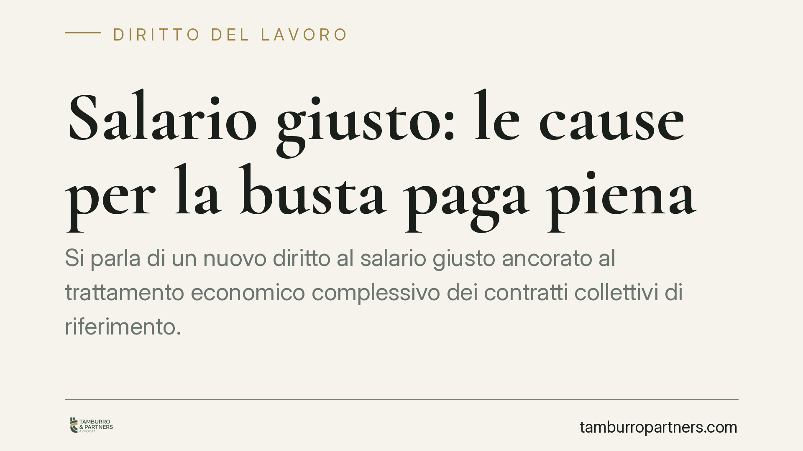

Salario giusto: le cause per la busta paga piena
Si parla di un nuovo diritto al "salario giusto" ancorato al trattamento economico complessivo dei contratti collettivi di riferimento. L'intervento, legato alla conversione del cosiddetto decreto Lavoro, aprirebbe la strada ad azioni per l'adeguamento della retribuzione. Prima di agire, però, serve distinguere ciò che è diritto vigente da ciò che resta da verificare.

Il quadro: cosa si sta muovendo
Nel dibattito recente circola la notizia di una nozione legale di "salario giusto" che consentirebbe ai lavoratori sottopagati di chiedere in giudizio l'adeguamento della retribuzione non ai soli minimi tabellari, ma al trattamento economico complessivo (Tec) previsto dai contratti collettivi leader di settore.
Una precisazione doverosa. Il riferimento normativo indicato dalle fonti divulgative — una legge di conversione del decreto Lavoro (D.L. 62/2026) — non risulta al momento verificabile nella Gazzetta Ufficiale con il numero e l'articolato citati. Trattiamo quindi questo profilo come dato da confermare: fino alla pubblicazione ufficiale del testo e all'individuazione del comma che definisce "salario giusto" e parametro Tec, ogni affermazione sul contenuto preciso della norma va presa con cautela.
Ciò non toglie che il tema poggi su basi giuridiche solide e già operanti, indipendentemente dalla riforma annunciata.
Inquadramento normativo
Il diritto a una retribuzione adeguata non nasce oggi. L'art. 36 della Costituzione garantisce al lavoratore una retribuzione "proporzionata alla quantità e qualità del suo lavoro" e "sufficiente ad assicurare a sé e alla famiglia un'esistenza libera e dignitosa".
L'art. 2099 del codice civile completa il quadro: in assenza di accordo o norma specifica, la misura della retribuzione è determinata dal giudice. Da decenni la giurisprudenza utilizza i minimi tabellari dei contratti collettivi come parametro di riferimento per verificare il rispetto dell'art. 36 Cost., anche nei confronti di datori non firmatari di quel contratto.
Sul piano europeo, la Direttiva (UE) 2022/2041 sui salari minimi adeguati impone agli Stati membri misure per rafforzare la contrattazione collettiva e l'adeguatezza delle retribuzioni. La riforma italiana si inserirebbe in questo solco.
Minimi tabellari e trattamento economico complessivo
Qui sta il punto qualificante. Il minimo tabellare è la paga base prevista per il livello di inquadramento. Il trattamento economico complessivo (Tec) è una grandezza più ampia: comprende, oltre alla paga base, voci come scatti di anzianità, mensilità aggiuntive, indennità e altri istituti economici del contratto collettivo.
Se il parametro legale diventasse il Tec, e non più il solo minimo tabellare, l'asticella per valutare l'adeguatezza della retribuzione si alzerebbe in modo significativo. È questa la ragione dell'attenzione intorno al tema.
Resta però un nodo interpretativo serio e ancora aperto: quale contratto collettivo vada assunto come leader di settore, e come si perimetri esattamente il Tec. Finché il testo non chiarirà questi passaggi, ampi margini di incertezza accompagneranno le prime azioni.
Il profilo della prescrizione
Chi valuta un'azione per differenze retributive deve considerare la prescrizione. I crediti di lavoro periodici si prescrivono in cinque anni (art. 2948, n. 4, c.c.).
Sulla decorrenza del termine occorre attenzione: la giurisprudenza ha chiarito che, per i rapporti privi di stabilità reale, la prescrizione non corre in costanza di rapporto ma dalla sua cessazione (si veda, in particolare, Cass. n. 26246/2022, che ha ridefinito il quadro dopo le modifiche al regime di tutela). La valutazione va fatta caso per caso.
Implicazioni pratiche
Per il lavoratore, l'eventuale ancoraggio al Tec amplierebbe la base di calcolo delle differenze rivendicabili. Ma la fondatezza dell'azione dipenderà dalla corretta individuazione del contratto di riferimento e dalla tenuta dei conteggi.
Per il datore di lavoro, cresce l'esposizione a contenzioso: applicare un contratto collettivo con trattamenti inferiori a quelli del settore potrebbe non bastare più a escludere il rischio di adeguamento.
Cosa fare in concreto
Se sei un lavoratore:
- Recupera e conserva buste paga, contratto individuale e Ccnl applicato.
- Verifica il livello di inquadramento e confrontalo con le mansioni effettive.
- Fatti ricostruire le differenze tenendo conto del termine quinquennale di prescrizione.
Se sei un datore di lavoro:
- Mappa il contratto collettivo applicato e confrontalo con quelli del settore per voci e Tec.
- Rivedi le politiche retributive e documenta i criteri adottati, anche in vista dell'evoluzione normativa.
Disclaimer
Contributo informativo a cura di Tamburro & Partners - Avv. Giuseppe Tamburro. Non costituisce parere legale.
Ogni storia di lavoro ha i suoi tempi.
Se gestisci HR e vuoi un confronto su contenzioso, ispezioni o licenziamenti, scrivi allo studio. Ti rispondiamo entro un giorno lavorativo.